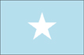
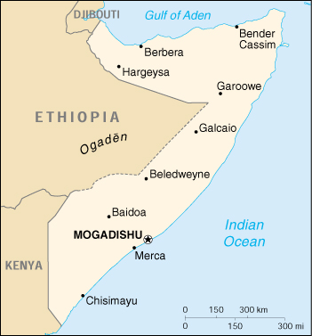

{kind=link}


| Somalia |  |
|
|  | |
| Introduction |
Background: Intermittent civil war has been a fact of life in Somalia since 1977. In 1991, the northern portion of the country declared its independence as Somaliland; although de facto independent and relatively stable compared to the tumultuous south, it has not been recognized by any foreign government. Beginning in 1993, a two-year UN humanitarian effort (primarily in the south) was able to alleviate famine conditions, but when the UN withdrew in 1995, having suffered significant casualties, order still had not been restored.
| Geography |
Location: Eastern Africa, bordering the Gulf of Aden and the Indian Ocean, east of Ethiopia
Geographic coordinates: 10 00 N, 49 00 E
Map references: Africa
Area:
total:
637,657 sq km
land:
627,337 sq km
water:
10,320 sq km
Area - comparative: slightly smaller than Texas
Land boundaries:
total:
2,366 km
border countries:
Djibouti 58 km, Ethiopia 1,626 km, Kenya 682 km
Coastline: 3,025 km
Maritime claims:
territorial sea:
200 nm
Climate: principally desert; December to February - northeast monsoon, moderate temperatures in north and very hot in south; May to October - southwest monsoon, torrid in the north and hot in the south, irregular rainfall, hot and humid periods (tangambili) between monsoons
Terrain: mostly flat to undulating plateau rising to hills in north
Elevation extremes:
lowest point:
Indian Ocean 0 m
highest point:
Shimbiris 2,416 m
Natural resources: uranium and largely unexploited reserves of iron ore, tin, gypsum, bauxite, copper, salt
Land use:
arable land:
2%
permanent crops:
0%
permanent pastures:
69%
forests and woodland:
26%
other:
3% (1993 est.)
Irrigated land: 1,800 sq km (1993 est.)
Natural hazards: recurring droughts; frequent dust storms over eastern plains in summer; floods during rainy season
Environment - current issues: famine; use of contaminated water contributes to human health problems; deforestation; overgrazing; soil erosion; desertification
Environment - international agreements:
party to:
Endangered Species, Law of the Sea
signed, but not ratified:
Marine Dumping, Nuclear Test Ban
Geography - note: strategic location on Horn of Africa along southern approaches to Bab el Mandeb and route through Red Sea and Suez Canal
| People |
Population:
7,253,137
note:
this estimate was derived from an official census taken in 1975 by the Somali Government; population counting in Somalia is complicated by the large number of nomads and by refugee movements in response to famine and clan warfare (July 2000 est.)
Age structure:
0-14 years:
44% (male 1,610,945; female 1,608,209)
15-64 years:
53% (male 1,938,263; female 1,892,752)
65 years and over:
3% (male 90,717; female 112,251) (2000 est.)
Population growth rate: 2.9% (2000 est.)
Birth rate: 47.7 births/1,000 population (2000 est.)
Death rate: 18.69 deaths/1,000 population (2000 est.)
Net migration rate: 0 migrant(s)/1,000 population (2000 est.)
Sex ratio:
at birth:
1.03 male(s)/female
under 15 years:
1 male(s)/female
15-64 years:
1.02 male(s)/female
65 years and over:
0.81 male(s)/female
total population:
1.01 male(s)/female (2000 est.)
Infant mortality rate: 125.77 deaths/1,000 live births (2000 est.)
Life expectancy at birth:
total population:
46.23 years
male:
44.66 years
female:
47.85 years (2000 est.)
Total fertility rate: 7.18 children born/woman (2000 est.)
Nationality:
noun:
Somali(s)
adjective:
Somali
Ethnic groups: Somali 85%, Bantu, Arabs 30,000
Religions: Sunni Muslim
Languages: Somali (official), Arabic, Italian, English
Literacy:
definition:
age 15 and over can read and write
total population:
24%
male:
36%
female:
14% (1990 est.)
| Government |
Country name:
conventional long form:
none
conventional short form:
Somalia
former:
Somali Republic, Somali Democratic Republic
Data code: SO
Government type: none
Capital: Mogadishu
Administrative divisions: 18 regions (plural - NA, singular - gobolka); Awdal, Bakool, Banaadir, Bari, Bay, Galguduud, Gedo, Hiiraan, Jubbada Dhexe, Jubbada Hoose, Mudug, Nugaal, Sanaag, Shabeellaha Dhexe, Shabeellaha Hoose, Sool, Togdheer, Woqooyi Galbeed
Independence: 1 July 1960 (from a merger of British Somaliland, which became independent from the UK on 26 June 1960, and Italian Somaliland, which became independent from the Italian-administered UN trusteeship on 1 July 1960, to form the Somali Republic)
National holiday: NA
Constitution: 25 August 1979, presidential approval 23 September 1979
Legal system: NA
Suffrage: 18 years of age; universal
Executive branch: Somalia has no functioning government; the United Somali Congress (USC) ousted the regime of Major General Mohamed SIAD Barre on 27 January 1991; the present political situation is one of anarchy, marked by interclan fighting and random banditry
Legislative branch:
unicameral People's Assembly or Golaha Shacbiga
note:
not functioning
Judicial branch: (not functioning); note - following the breakdown of national government, most regions have reverted to Islamic law with a provision for appeal of all sentences
Political parties and leaders: none
Political pressure groups and leaders: numerous clan and subclan factions are currently vying for power
International organization participation: ACP, AfDB, AFESD, AL, AMF, CAEU, ECA, FAO, G-77, IBRD, ICAO, ICRM, IDA, IDB, IFAD, IFC, IFRCS, IGAD, ILO, IMF, IMO, Intelsat, Interpol, IOC, IOM (observer), ITU, NAM, OAU, OIC, UN, UNCTAD, UNESCO, UNHCR, UNIDO, UPU, WFTU, WHO, WIPO, WMO, WTrO (observer)
Diplomatic representation in the US: Somalia does not have an embassy in the US (ceased operations on 8 May 1991)
Diplomatic representation from the US: the US does not have an embassy in Somalia; US interests are represented by the US Embassy in Nairobi at Moi Avenue and Haile Selassie Avenue; mail address: P. O. Box 30137, Unit 64100, Nairobi; APO AE 09831; telephone: [254] (2) 334141; FAX [254] (2) 340838
Flag description: light blue with a large white five-pointed star in the center; design based on the flag of the UN (Italian Somaliland was a UN trust territory)
Government - note: While chaos and clan fighting continue in most of Somalia, some orderly government has been established in the northern part. In May 1991, the elders of clans in former British Somaliland established the independent Republic of Somaliland, which, although not recognized by any government, maintains a stable existence, aided by the overwhelming dominance of the ruling clan and the economic infrastructure left behind by British, Russian, and American military assistance programs. Neighboring Puntland has also made strides towards reconstructing legitimate, representative government. In February 1996, the EU agreed to finance the reconstruction of the port of Berbera; since then, other aid projects have been assumed by the EU and by a non-governmental Italian organization.
| Economy |
Economy - overview: One of the world's poorest and least developed countries, Somalia has few resources. Moreover, much of the economy has been devastated by the civil war. Agriculture is the most important sector, with livestock accounting for about 40% of GDP and about 65% of export earnings. Nomads and semi-nomads, who are dependent upon livestock for their livelihood, make up a large portion of the population. After livestock, bananas are the principal export; sugar, sorghum, corn, and fish are products for the domestic market. The small industrial sector, based on the processing of agricultural products, accounts for 10% of GDP; most facilities have been shut down because of the civil strife. Moreover, in 1999, ongoing civil disturbances in Mogadishu and outlying areas interfered with any substantial economic advance and with international aid arrangements.
GDP: purchasing power parity - $4.3 billion (1999 est.)
GDP - real growth rate: NA%
GDP - per capita: purchasing power parity - $600 (1999 est.)
GDP - composition by sector:
agriculture:
59%
industry:
10%
services:
31% (1995 est.)
Population below poverty line: NA%
Household income or consumption by percentage share:
lowest 10%:
NA%
highest 10%:
NA%
Inflation rate (consumer prices): NA%
Labor force: 3.7 million (very few are skilled laborers)(1993 est.)
Labor force - by occupation: agriculture (mostly pastoral nomadism) 71%, industry and services 29%
Unemployment rate: NA%
Budget:
revenues:
$NA
expenditures:
$NA, including capital expenditures of $NA
Industries: a few small industries, including sugar refining, textiles, petroleum refining (mostly shut down)
Industrial production growth rate: NA%
Electricity - production: 265 million kWh (1998)
Electricity - production by source:
fossil fuel:
100%
hydro:
0%
nuclear:
0%
other:
0% (1998)
Electricity - consumption: 246 million kWh (1998)
Electricity - exports: 0 kWh (1998)
Electricity - imports: 0 kWh (1998)
Agriculture - products: bananas, sorghum, corn, sugarcane, mangoes, sesame seeds, beans; cattle, sheep, goats; fish
Exports: $187 million (f.o.b., 1998 est.)
Exports - commodities: livestock, bananas, hides, fish (1997)
Exports - partners: Saudi Arabia 57%, UAE 15%, Italy 12%, Yemen 8% (1997)
Imports: $327 million (f.o.b., 1998 est.)
Imports - commodities: manufactures, petroleum products, foodstuffs, construction materials (1995)
Imports - partners: Djibouti 20%, Kenya 11%, Belarus 11%, India 10%, Saudi Arabia 9%, Brazil 9% (1997)
Debt - external: $2.6 billion (1997 est.)
Economic aid - recipient: $191.5 million (1995)
Currency: 1 Somali shilling (So. Sh.) = 100 cents
Exchange rates:
Somali shillings (So. Sh.) per US$1 - 2,620 (January 1999), 7,500 (November 1997 est.), 7,000 (January 1996 est.), 5,000 (1 January 1995), 2,616 (1 July 1993), 4,200 (December 1992)
note:
the Republic of Somaliland, a self-declared independent country not recognized by any foreign government, issues its own currency, the Somaliland shilling (So. Sh.)
Fiscal year: NA
| Communications |
Telephones - main lines in use: NA
Telephones - mobile cellular: NA
Telephone system:
the public telecommunications system was completely destroyed or dismantled by the civil war factions; all relief organizations depend on their own private systems
domestic:
recently, local cellular telephone systems have been established in Mogadishu and in several other population centers
international:
international connections are available from Mogadishu by satellite
Radio broadcast stations: AM 0, FM 0, shortwave 4 (1988)
Radios: 470,000 (1997)
Television broadcast stations: 1 (1997)
Televisions: 135,000 (1997)
Internet Service Providers (ISPs): NA
| Transportation |
Railways: 0 km
Highways:
total:
22,100 km
paved:
2,608 km
unpaved:
19,492 km (1996 est.)
Pipelines: crude oil 15 km
Ports and harbors: Bender Cassim (Boosaaso), Berbera, Chisimayu (Kismaayo), Merca, Mogadishu
Merchant marine: none (1999 est.)
Airports: 61 (1999 est.)
Airports - with paved runways:
total:
7
over 3,047 m:
4
2,438 to 3,047 m:
1
1,524 to 2,437 m:
1
914 to 1,523 m:
1 (1999 est.)
Airports - with unpaved runways:
total:
54
2,438 to 3,047 m:
3
1,524 to 2,437 m:
12
914 to 1,523 m:
29
under 914 m:
10 (1999 est.)
| Military |
Military branches: no functioning central government military forces; clan militias continue to battle for control of key economic or political prizes
Military manpower - availability:
males age 15-49:
1,772,631 (2000 est.)
Military manpower - fit for military service:
males age 15-49:
984,103 (2000 est.)
Military expenditures - dollar figure: $NA
Military expenditures - percent of GDP: NA%
| Transnational Issues |
Disputes - international: most of the southern half of the boundary with Ethiopia is a Provisional Administrative Line; territorial dispute with Ethiopia over the Ogaden